Archive cover · PDF p. 1
Open Access Support provided by: Zhejiang University; Qiushi Academy for Advanced Studies, Zhejiang University.
PDF Download · 3746027.3755020.pdf · 28 January 2026 · Total Citations: 0 · Total Downloads: 105.
Published: 27 October 2025. MM ’25: The 33rd ACM International Conference on Multimedia. October 27–31, 2025, Dublin, Ireland. Conference Sponsors: SIGMM. ISBN: 9798400720352.

Le Han
Qiushi Academy for Advanced Studies College of Computer Science and Technology Zhejiang University, Hangzhou, China hanle@zju.edu.cn
Kaixuan Chen
Zhejiang University, Hangzhou, China Hangzhou High-Tech Zone (Binjiang) Institute of Blockchain and Data Security Hangzhou, Zhejiang, China chenkx@zju.edu.cn
Minchen Ye
Qiushi Academy for Advanced Studies School of Software Technology Zhejiang University, Hangzhou, China ymc1097@zju.edu.cn
Nenggan Zheng ∗
Qiushi Academy for Advanced Studies Zhejiang University, Hangzhou, China School of Computer and Information Engineering Bengbu University, Bengbu, China zng@cs.zju.edu.cn
Abstract
Text-conditioned motion generation has significant applications across various domains. However, generating natural motion remains challenging due to the vast solution space and the accumulation of errors during motion generation. To address these challenges, a novel hierarchical motion intention decoding-based motion synthesis model named Hi-Motion is proposed, which disentangles human motion into temporal intents of pivot joints and skeleton synthesis guided by intention from a new perspective. Specifically, Hi-Motion first parameterizes pivot joint motion with high-order Bézier curves and constructs a Bézier decoder to generate their trajectories, which serve as motion intention to guide skeleton generation. Secondly, we formulate the generation of skeletons as a graph node transformation problem under the condition of determined edge connections. By incorporating hierarchical joint motion intentions into the graph node features, the spatial details of each frame can be precisely synthesized. The proposed Hi-Motion effectively decouples motion generation into temporal and spatial dimensions through hierarchical motion intention decoding, ensuring coordination and naturalness in the generated motion. Extensive experiments on HumanML3D and KIT-ML datasets substantiate the motion generation capabilities of Hi-Motion. Further analysis demonstrates that Hi-Motion can accurately predict the motion intention of pivot joints and synthesize skeletal details.
∗ Corresponding author
Permission to make digital or hard copies of all or part of this work for personal or classroom use is granted without fee provided that copies are not made or distributed for profit or commercial advantage and that copies bear this notice and the full citation on the first page. Copyrights for components of this work owned by others than the author(s) must be honored. Abstracting with credit is permitted. To copy otherwise, or republish, to post on servers or to redistribute to lists, requires prior specific permission and/or a fee. Request permissions from permissions@acm.org.
MM '25, Dublin, Ireland
© 2025 Copyright held by the owner/author(s). Publication rights licensed to ACM. ACM ISBN 979-8-4007-2035-2/2025/10 https://doi.org/10.1145/3746027.3755020
CCS Concepts
· Computing methodologies → Activity recognition and understanding.
Keywords
Hierarchical Representation, Motion Synthesis, Multi-Modal
ACM Reference Format:
Le Han, Kaixuan Chen, Minchen Ye, and Nenggan Zheng. 2025. Hi-Motion: Hierarchical Intention Guided Conditional Motion Synthesis. In Proceedings of the 33rd ACM International Conference on Multimedia (MM '25), October 27-31, 2025, Dublin, Ireland. ACM, New York, NY, USA, 10 pages. https: //doi.org/10.1145/3746027.3755020
1 Introduction
Accurate modeling of human motion is essential for understanding human behavior, improving human-computer interaction, producing films and games, and developing intelligent systems capable of predicting and responding to human movements [3, 44]. Despite rapid advancement in human motion analysis, generating natural and realistic human motion remains challenging due to the complexity and variability inherent in human motions [10, 26, 55]. Synthesizing human motion sequences from textual descriptions requires understanding the semantics of natural language to generate corresponding dynamic skeletal movements, capturing the inherent complex spatio-temporal relationships within human motion. The predominant paradigm [7, 51-53] involves independently encoding text and motion sequences to obtain aligned features in a latent space, followed by a motion decoder to generate human motion sequences. Motion decoders can be categorized into two types based on their generation mechanisms: direct mapping and autoregressive decoding. The former [7, 52, 54] employs generators such as VAE-decoders and diffusion models [19] to learn the mapping from aligned feature spaces to motion sequences. However, the excessive solution space for directly generating motion sequences due to their complex spatiotemporal nature often leads to anomalies such as unnatural limb movements and discontinuous actions. The letter [13, 51] adopts the autoregressive mechanism to

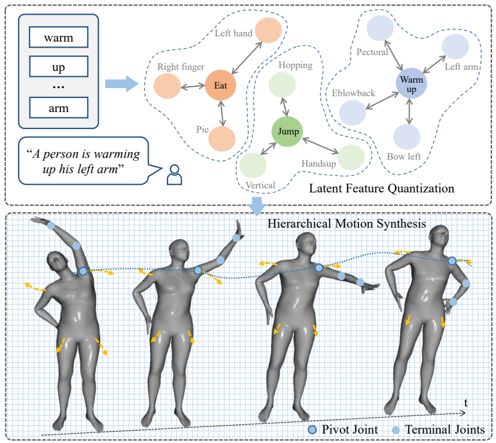
generate skeleton sequences frame-by-frame. The autoregressive mechanism results in error propagation, causing a degradation in generation quality as the number of frames increases. A promising strategy [5, 26] involves decoupling the motion generation task by first generating motion trajectories and then deriving motion sequences from these trajectories, thereby separating temporal and spatial domains. However, the ambiguity in the boundaries between actions means that relying solely on root node trajectory information cannot accurately distinguish between actions, limiting the performance of generated results. These issues highlight an urgent need for resolution: How to effectively decompose motion generation tasks to mitigate the issues of vast solution space and error accumulation during motion generation?
To tackle the identified challenges, a motion generation model named Hi-Motion is proposed. It address the challenges from a novel perspective of motion hierarchy and decomposes the motion of each body part into the intention guidance of pivot joints and the action execution of terminal joints as shown in Fig. 1. By generating only the trajectories of pivot joints from the latent feature space, the complexity of the mapping is effectively reduced. Additionally, we introduce hierarchical intent guidance to mitigate the accumulation of errors in skeleton generation. Specifically, the skeletal structure is partitioned into distinct biomechanical regions based on anatomical connectivity. As shown in Fig. 2, each region comprises a pivot joint, the joint connecting the region to the torso, and terminal joints responsible for executing specific actions. To ensure the temporal consistency of the generated motion, we first generate the trajectories of the pivot joints to obtain the temporal motion intentions for body parts. Considering that joint movements in the human body are controlled by adjacent points, to ensure the fluidity of generated motions and to avoid singularities such as Gimbal Lock [17], we parameterize the temporal trajectories using higher-order Bézier curves, which are also arbitrary curves restricted by control points. During the skeleton sequence generation, we propose that the skeleton edge indices remain consistent across frames in human motion, with variations only in node features. Therefore, the skeleton generation is formulated as a skeleton graph node transformation problem under the condition of determined edge connections, and we construct a graph-based skeleton generation model that encodes hierarchical intentions into node features.
The proposed hierarchical representation of motion allows independent control of the motion at different levels. For example, the motion of the global skeleton can be adjusted to change the style of the overall action, while the motion of specific body parts can be fine-tuned for finer action control. This hierarchical control capability makes the generated motion sequences more flexible and diverse. Besides, the trajectories of pivot joints can help the model capture long-range dependencies, making the generated motion coherent and natural in both the temporal and spatial domains. Even if some frames have missing data or high noise, the model can be compensated and corrected by such intentional information.
We conduct comparisons with state-of-the-art models on the HumanML3D [13] and KIT-ML [36] datasets. The results demonstrate the superiority of Hi-Motion. Additionally, extensive experiments are performed to thoroughly analyze each module and mechanism. The contributions are summarized as follows:
· We approach motion generation from a novel hierarchical perspective, which effectively alleviates the issues of vast solution spaces and error accumulation in the mapping from latent features to motion.
· We parameterize the joint motion trajectories with highorder Bézier curves and develop a Bézier decoder to achieve a parameterized mapping from latent features to hierarchical motion intentions.
· We formulate skeleton generation as an edge-constrained graph transformation problem, integrating hierarchical motion intentions into node features to minimize error propagation in motion generation.
· Extensive experiments are conducted on HumanML3D and KIT-ML datasets. The experimental results demonstrate the effectiveness of the proposed model.
2 Related Works
2.1 Motion Representations
Motion representation is essential in computer vision, animation, and robotics applications. It can be categorized into three forms based on the characteristics: keypoints-based, rotation-based, and video sequence feature-based [32, 55]. Keypoint-based methods [26, 28, 50] utilize a predefined set of body joints to represent motion, typically identified from images or videos via pose estimation models [4, 43]. Keypoints provide a clear and interpretable representation, and can be easily adapted to various body parts and scales. Rotation-based methods [15, 25, 33] employ joint angle parameters, including axial angles, quaternions, or Euler angles, to represent the human pose. Pose is defined by the rotation of each joint relative to the root node of the body. It provides smooth interpolation between orientations, which is crucial for natural-looking animations. Video sequence feature-based methods [41, 44, 55] extract features directly from video or image sequences to represent human motion. These features can include optical flow, appearance, and deep learning embeddings. Models like Long Short Term Memory (LSTM) networks [20] are often used to model temporal dependencies in the data [44]. However, extracting and processing features from video can be computationally expensive. Large amounts of labeled data are often required to train deep learning models effectively.
2.2 Human Motion Generation
Motion generation aims to generate corresponding motion sequences from given conditional information, such as text [6, 51, 52], music [37], or scenes [55]. With the rapid development of large language models [1, 38, 39], text-based motion generation has also made significant progress. MoCoGAN [46] enhances motion generation effects by employing Generative Adversarial Networks (GANs) [12], but this adversarial training approach is prone to mode collapse and instability during training. Seq2seq [24] is an attempt based on the Variational AutoEncoder (VAE) [22], which constructs text encoding and skeleton decoding modules based on LSTM and GRU [8], respectively, achieving the mapping from text to motion. However, the latent vector encoded by VAE is continuous, which is difficult to interpret and suffers from insufficient generation diversity.
A current mainstream generation paradigm is the model based on the Vector Quantised-Variational AutoEncoder (VQ-VAE) [47, 51, 53], which learns discrete latent representations of motion. Structured discrete latent features enhance the model's compositional generalization. Combining different discrete codebook vectors allows the models to generate entirely new samples, which is challenging in continuous latent spaces. T2M-GPT [51] leverages a VQ-VAE and a transformer to generate motion, exhibiting efficacy in longtext generation. TLControl [48] implements conditional human motion generation based on hand-drawn trajectories and textual descriptions based on the VQ-VAE architecture. Recently, diffusion model [19] has demonstrated significant effectiveness in motion generation [7, 49, 52]. These models create realistic samples by simulating a diffusion process, which involves progressively adding noise to data and subsequently learning to reverse this process for sample generation. The Fg-T2M [49] proposes a diffusion-based motion generation framework that incorporates context-sensitive progressive reasoning. MotionDiffusion [52] leverages diffusion models to effectively enhance the realism of motion generation. Although these methods have achieved promising results, they encounter inherent limitations when generating motion sequences. Some generate motion sequences directly from feature spaces, leading to an excessively large solution space. Others employ autoregressive generation, where subsequent poses are contingent upon the results of preceding frames. Consequently, these approaches inevitably face a degradation in generation quality over time.
3 Method
3.1 Overview
Given a text condition 𝑐, the proposed model aims to generate a motion sequence 𝑀 = {𝑠1, 𝑠2, ..., 𝑠ℓ }, where 𝑠𝑖 is the skeleton of the 𝑖-th frame and ℓ is the number of frames. Based on the discrete latent feature 𝑧𝑒 , which is obtained by the motion embedding part, we first generate the Bézier control points 𝑃𝑐 = {𝑝𝑐1 , . . . , 𝑝𝑐𝑛} of the hierarchical pivot joints trajectories with a Bézier decoder. The reconstructed trajectories 𝑇 = {𝑡 𝑟 , 𝑡 𝑙𝑠 , 𝑡 𝑟𝑠 , 𝑡 𝑙ℎ , 𝑡 𝑟ℎ} from the control points will serve as the motion intentions of the hierarchical body structure (including the root, left and right shoulder joints and the left and right hip joints). Then, under the guidance of the hierarchical motion intentions, the motion sequence 𝑀 is synthesized.

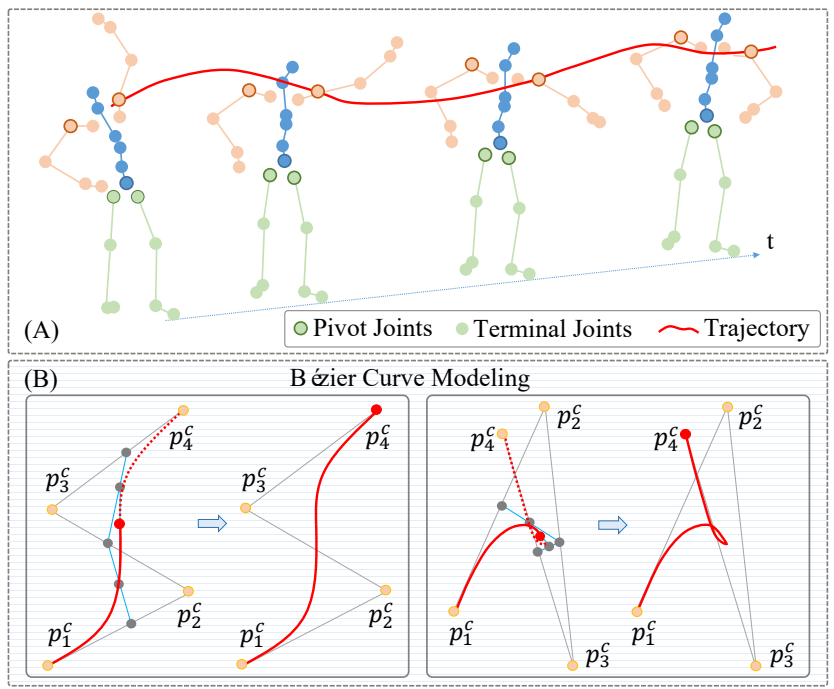
3.1.1 Hierarchical Motion Representation
The skeleton is hierarchically partitioned based on joint connectivity. Initially, we divide it into five distinct regions according to their kinematic functions, encompassing the body trunk and limbs as shown in Fig. 2. Subsequently, the joints of each region are categorized into a pivot joint and several terminal joints. The pivot joint, located at the junction of the body regions and trunk, exhibits a relatively smooth trajectory. The pivot of the trunk is the root. Terminal joints represent the remaining joints within each region. Although their movements are somewhat more complex compared to the pivot joint, they are governed by the motion intentions of the pivot joint. Leveraging this hierarchical representation of the skeleton, the motion sequence generation task can be formulated as the temporal motion of pivot joints and the frame-by-frame synthesis of terminal joints guided by the motion trends of the pivot joints.
3.1.2 The Proposed Motion Synthesis Framework
The Hi-Motion framework consists of two main components: a motion embedding part and a hierarchical motion synthesis module, as illustrated in Fig. 3. The motion embedding consists of a text encoder, which is a pre-trained CLIP [38], and a graph convolution-based motion encoder. The motion synthesis module is divided into two parts: a Bézier decoder to generate the temporal intentions of pivot points and a skeleton generator to synthesize the spatial skeletons. During the motion intentions generation, we concurrently generate the motion trajectories by higher-order Bézier parameterization for the pivot joints, thereby coordinating the movement of the trunk and limbs. In the skeleton synthesis phase, we model it as a graph transformation problem with certain edge connections, and a graph model is constructed that can encode the intention of the motion into the features of the node. The proposed motion generation framework combines hierarchical representation with global intention guidance, which effectively deals with the vast solution space and error accumulation problems faced by motion generation.
![Figure 3: Architecture of the proposed Hi-Motion. The model initially generates trajectories for the pivot joints of hierarchical body structure (including the root, left and right shoulder, and left and right hip joints) from discrete latent features 𝑧𝑒 using the Bézier Decoder Module (BDM). These trajectories are reconstructed through the predicted Bézier control points. Subsequently, during the generation of each frame pose by the Skeleton Generator, the derived trajectory information is encoded into the skeleton graph as the motion intention of the preceding frame, thereby guiding the model to synthesize motion.](assets/figure-3.webp)
Proposition 1 Incorporating global intention guidance during autoregressive learning of the mapping from latent features to motion sequence effectively alleviates error accumulation.
Proof. The conditional probability of generating the 𝑖-th frame 𝑠𝑖 is 𝑃 (𝑠𝑖 |𝑧). Since the generation of each frame depends on the previous frames, the generation probability of the motion 𝑀 is as follows:

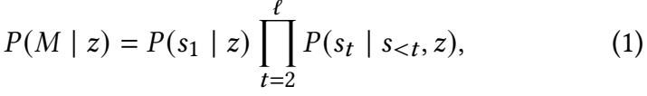
where 𝑧 is the latent feature. The overall error increases frame by frame since the probability 𝑃 above is in the [0, 1] interval.
The key to alleviating this problem is to introduce additional effective information 𝐼 during generation so that the new conditional probability satisfies the following:

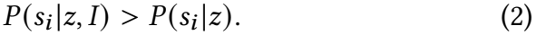
The proposed hierarchical intention guidance mechanism effectively complements the prior conditions during generation, which increases the generative conditional probability. Thus, the error accumulation problem in the skeleton generation process is reduced.
3.2 Pivot Joints Motion Intention Generation
We propose a Bézier Decoder Module (BDM) to generate the motion trajectories of the pivot joints in the hierarchical body structure. These trajectories provide motion intention for subsequent skeleton synthesis. While appearing as arbitrary curves, the trajectories are essentially movements within certain degrees of freedom, as the motion of each joint is controlled in concert with other joints. For instance, the movement of the left shoulder joint is constrained within a curve defined by neighboring joints, as illustrated in Fig. 2(A). Directly predicting trajectories can easily result in anomalies, leading to unnatural motion [31, 40]. To ensure the naturalness and fluidity of the generated trajectories, we introduce high-order Bézier curves [21, 30] for parametric motion modeling. This involves initially generating the Bézier control points for the trajectories of pivot joints of body parts using a Bézier decoder and then reconstructing the motion trajectories based on these points. Additionally, we can adjust the parameters to control and modify the motion.
Bézier trajectory curves are defined by control points and described by parametric equations that determine the shape of the curve. For an 𝑛-degree Bézier curve 𝐵(𝑢), the formula is as follows:

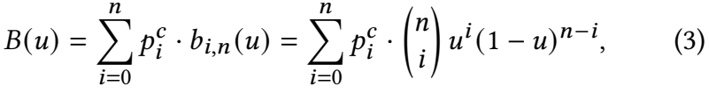
where C(n, i) denotes the binomial coefficient, representing the number of combinations of choosing 𝑖 elements from 𝑛 distinct elements. 𝑝𝑐 𝑖 represents the 𝑖-th control point, 𝑢 is the parameter. For a given
Algorithm 1 Calculation of Control Points
Require: The trajectory 𝑡 𝑘 = {𝑡 𝑘 1 , 𝑡 𝑘 2 , ..., 𝑡 𝑘 ℓ} of the joint. Ensure: The control points 𝑃𝑐 modeled by higher-order Bézier curve.
1: Initialize control points;
2: while non-convergence do
3: Calculating the gradient:

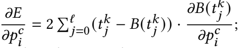
4: Update the control points:

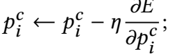
5: end while
6: return The Bézier control points.
trajectory 𝑡 𝑘 , the parameterization process requires identifying 𝑛 control points 𝑃𝑐 = {𝑝𝑐1 , . . . , 𝑝𝑐𝑛} such that the resulting Bézier curve 𝐵(𝑢) closely approximates the trajectory points. Consequently, obtaining control points involves optimizing to minimize the error 𝐸 as described in Eq. 4, which is illustrated in Algorithm 1. When initializing control points, the start and end points of the trajectory are selected as the start and end of control points, with intermediate control points initialized via uniform sampling. Then the control points are updated by gradient descent until convergence.

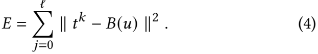
During the training phase, we parameterize the trajectories of the pivot joint of each body part using the process mentioned above and then employ the proposed Bézier decoder to learn the mapping between latent features and Bézier control points.
3.3 Intention Guided Skeleton Synthesis
Using the obtained trajectories of pivot joints, we modeled the motion generation task as a hierarchical motion intention that guides the generation of skeleton sequences. Since the skeleton is a definite connection mode of "trunk-limbs" [16, 50], we propose to define the skeleton generation of each frame as the graph node transformation under the condition of the determined edge connection. To this end, an intention guided Skeleton Synthesis Mechanism (SSM) is designed to accomplish this objective. Specifically, given the previous frame skeleton 𝑠𝑡-1, SSM encodes the hierarchical pivot joint trajectories as motion intentions into the node features and then generates the subsequent frame 𝑠𝑡 . The trajectory information, providing the current movement trends of the pivot joints of the body, effectively prevents the generation of anomalous motion outcomes.
As depicted in Fig. 3, when generating the skeleton 𝑠𝑖 at time 𝑖, we first derive the motion intention 𝐼 for the current moment based on the obtained hierarchical structure and the trajectories of the pivot joints. Specifically, for the joint 𝑘, its motion intention in 𝑖-th frame is 𝐼 𝑘 [𝑖] = ----→ 𝑡 𝑘 𝑖 -1𝑡 𝑘 𝑖 , where the 𝑡 𝑘 is the trajectory of pivot joint 𝑘. Subsequently, the graph node feature matrix 𝑀node is constructed by integrating the previous pose 𝑝𝑖-1, the motion intention 𝐼 , and latent features 𝑧 through a node fusion 𝑓𝑐 as follows:

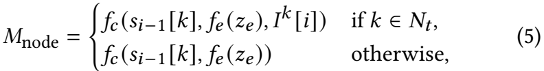
where 𝑓𝑐 represents the feature concatenate, and 𝑓𝑒 means fully connected mapping. 𝑁𝑡 is the set of hierarchical pivot joints, where intention integration is first carried out when constructing the skeleton graph, thereby encoding the motion intention information into the node features. The skeleton generator consists of a graph module comprising three graph convolutional layers, a fully connected layer, and an LSTMmodule, as shown in Fig. 3.
3.4 Objective
During the training phase, the objective of the hierarchical motion synthesis part consists of two parts as follows.

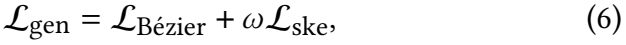
where 𝜔 is the weight. LBézier is the Bézier decoder loss, which is the mean square error between the generated Bézier control points and the ground truth. Lske is the loss of the skeleton generator.

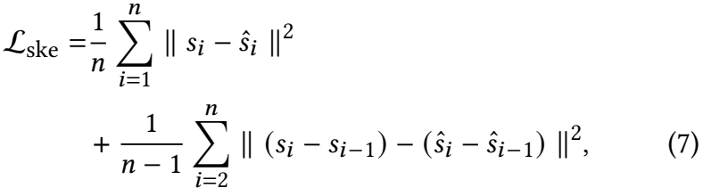
where ˆ 𝑠𝑖 is the generated skeleton of 𝑖-th frame. The first term is the reconstruction loss, which aims to measure the discrepancy between the ground truth and output. The second is the consistency loss, designed to guide model training by measuring the consistency of differences between adjacent frames. The objective of the motion embedding part is the VQ-VAE loss Lvq [47] that aims to optimize the latent feature 𝑧 and quantified latent feature 𝑧𝑒 . It consists of commitment loss Lcom and embedding loss Lemb as follows.

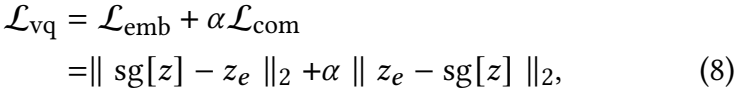
where sg[∗] represents the stop gradient and 𝑧 is the latent feature.

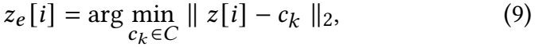
where 𝑐𝑘 is the 𝑘-th element in the codebook 𝐶. This quantization aims to find the closest element in 𝐶 to each feature 𝑧[𝑖].
4 Experiments
In this section, we present the experiments conducted on Hi-Motion model. We begin by detailing the implementation of the model, followed by an introduction to the experimental datasets and metrics. Subsequently, we compare the Hi-Motion with state-of-the-art models on the HumanML3D [13] and KIT Motion-Language (KIT-ML) [36] datasets. Finally, we conduct hyperparameter analysis and ablation studies on the parameter selection and proposed modules.
4.1 Implementation Details
The model is implemented in PyTorch 1.13.0 and MindSpore 1.7.0. The hardware configuration for the experiment is the Intel Xeon Platinum 8383C CPU and NVIDIA RTX 3090 GPU. The text encoder is a pre-trained CLIP model [38], and the motion encoder is a graphbased model that contains four graph convolution layers and two fully connected layers. The weight of commitment loss L𝑐𝑜𝑚 is 0.02, and the size of the codebook 𝐶 is 512, which is consistent with the previous work [51]. The motion generation training spanned 2000 epochs with a batch size of 256. The optimization algorithm employed is AdamW, with an initial learning rate of 0.001, which is reduced to 0.1 of its initial value every 300 epochs.

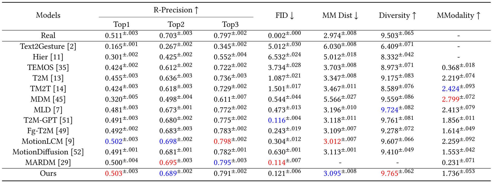
Recognized table text (check against the image)
| Models | R-Precision ↑ | FID ↓ | MMDist ↓ | Diversity ↑ | MModality ↑ | ||
|---|---|---|---|---|---|---|---|
| Top1 | Top2 | Top3 | |||||
| Real | 0.511 ±.003 | 0.703 ±.003 | 0.797 ±.002 | 0.002 ±.000 | 2.974 ±.008 | 9.503 ±.065 | - |
| Text2Gesture [2] | 0.165 ±.001 | 0.267 ±.002 | 0.345 ±.002 | 5.012 ±.030 | 6.030 ±.008 | 6.409 ±.071 | - |
| Hier [11] | 0.301 ±.002 | 0.425 ±.002 | 0.552 ±.004 | 6.532 ±.024 | 5.012 ±.018 | 8.332 ±.042 | - |
| TEMOS [35] | 0.424 ±.002 | 0.612 ±.002 | 0.722 ±.002 | 3.734 ±.028 | 3.703 ±.008 | 8.973 ±.071 | 0.368 ±.018 |
| T2M [13] | 0.455 ±.003 | 0.636 ±.003 | 0.736 ±.003 | 1.087 ±.021 | 3.347 ±.008 | 9.175 ±.083 | 2.219 ±.074 |
| TM2T [14] | 0.424 ±.003 | 0.618 ±.003 | 0.729 ±.002 | 1.501 ±.017 | 3.467 ±.011 | 8.589 ±.076 | 2.424 ±.093 |
| MDM [45] | 0.320 ±.005 | 0.498 ±.004 | 0.611 ±.007 | 0.544 ±.044 | 5.566 ±.027 | 9.559 ±.086 | 2.799 ±.072 |
| MLD [7] | 0.481 ±.003 | 0.673 ±.001 | 0.772 ±.002 | 0.473 ±.013 | 3.196 ±.010 | 9.724 ±.082 | 2.413 ±.079 |
| T2M-GPT [51] | 0.491 ±.003 | 0.680 ±.002 | 0.775 ±.002 | 0.116 ±.004 | 3.118 ±.011 | 9.761 ±.081 | 1.856 ±.011 |
| Fg-T2M [49] | 0.492 ±.002 | 0.683 ±.003 | 0.783 ±.002 | 0.243 ±.019 | 3.109 ±.007 | 9.278 ±.072 | 1.614 ±.049 |
| MotionLCM [9] | 0.502 ±.003 | 0.698 ±.002 | 0.798 ±.002 | 0.304 ±.012 | 3.012 ±.007 | 9.607 ±.066 | 2.259 ±.092 |
| MotionDiffusion [52] | 0.491 ±.001 | 0.681 ±.001 | 0.782 ±.001 | 0.630 ±.001 | 3.113 ±.001 | 9.410 ±.049 | 1.553 ±.042 |
| MARDM [29] | 0.500 ±.004 | 0.695 ±.003 | 0.795 ±.003 | 0.114 ±.007 | - | - | 0.231 ±.071 |
| Ours | 0.503 ±.003 | 0.689 ±.002 | 0.791 ±.002 | 0.121 ±.006 | 3.095 ±.008 | 9.765 ±.062 | 1.736 ±.053 |
4.2 Datasets and Metrics
The experiments are conducted on two commonly used text-tomotion datasets, HumanML3D [13] and KIT Motion-Language (KITML) [36]. HumanML3D is a merger of the HumanAct12 [15] and AMASS [27] datasets, comprising 14,616 motion data and 44,970 text descriptions. It covers a range of daily activities, sports, acrobatics, and artistry, such as "walking" and "jumping". The KIT-ML contains 3,917 motion samples and 6,353 text descriptions with 45,779 words.
The employed metrics include R-Precision, Frechet Inception Distance (FID) [18], Multi-Modal Distance (MM Dist), Diversity, and MultiModality (MModality), which are consistent with previous works [23, 49, 51-53]. R-Precision is computed by randomly selecting 31 mismatched descriptions for each inferred text-motion pair from the test set. The average top-k precision is obtained by calculating and ranking the Euclidean distances between the motion and each of the descriptions. The FID evaluates the similarity of feature distributions extracted from generated motions to those from ground truth motions. The MM Dist assesses the discrepancy between the text feature and the generated motion feature. Diversity is measured by evaluating the dissimilarity among all generated motions for different descriptions, using the mean pairwise Euclidean distance between randomly grouped motions. MModality is evaluated by generating 32 motion sequences based on a given text description and measuring their dissimilarity. R-Precision and FID are considered primary metrics due to their importance in evaluating the overall quality of generated motions [49].
4.3 Comparison with State-of-the-Art Models
We conduct comparison experiments with the state-of-the-art models, which include Seq2Seq [24], Text2Gesture [2], Hier [11], MoCoGAN [46], TEMOS [35], T2M [13], TM2T [14], MDM [45], MLD [7], T2M-GPT [51], Fg-T2M [49], and MotionDiffusion [52]. These models cover early-generation models like GAN, mainstream paradigms such as VQ-VAE, and emerging diffusion-based models. Table 1 and Table 2 show the experimental results of the models on the HumanML3D and KIT-ML datasets, respectively.
The experimental results indicate that our model achieves performance close to real motions across two datasets, thereby validating the efficacy of our proposed mechanisms: joint trajectory generation based on Bézier curve modeling and motion generation guided by hierarchical motion intentions. Compared to state-of-the-art models, our model demonstrates significant advantages in metrics such as R-precision, FID, MM Dist, and Diversity. The proposed model is not optimal on the MModality index. It is noteworthy that Guo et al. [13] suggests that higher MModality scores reflect greater diversity in motion. However, this should only be possible if motion generation is highly accurate. Poor accuracy can lead to an increase in inconsistency in action generation, thus artificially inflating the MModality metric [15, 34, 52].
4.4 Analysis of Hierarchical Representation
To validate the effectiveness of hierarchical motion representation, we conduct experiments on the HumanAct12 dataset [15], a subset of HumanML3D comprising 12 action classes. We perform action recognition analysis based on both individual root joint motion trajectories and the multiple pivot joints trajectories employed in this paper. Specifically, we train action recognition models using these two representations and validate their recognition accuracy on the test set. This is followed by a cluster analysis of the features extracted by the models. Both experiments utilized the same classification network, which included four graph convolutional layers and two fully connected layers. The action recognition accuracy of the model based on single root joint trajectories is 63.88%, while the accuracy based on hierarchical multiple pivot joints reaches 85.19%. The results of the feature clustering experiments are shown in Fig. 4. Relying only on the trajectories of the root joint is not enough to effectively differentiate between various actions. This is because human movements are diverse and complex, and individual joint trajectories often show similarities across various actions, which makes effective representation difficult. However, the characteristics of limbs, including arms and legs, typically manifest specific actions. Thus, introducing representations that include these five joint trajectories significantly improves action recognition accuracy. This indicates that our predicted multi-joint motion trajectories can effectively guide action generation, enabling the creation of globally natural and fluid motion.

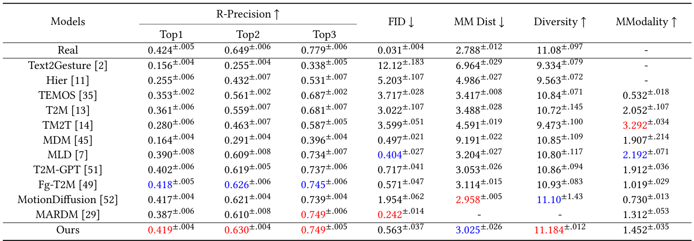
Recognized table text (check against the image)
| Models | R-Precision ↑ | FID ↓ | MMDist ↓ | Diversity ↑ | MModality ↑ | ||
|---|---|---|---|---|---|---|---|
| Top1 | Top2 | Top3 | |||||
| Real | 0.424 ±.005 | 0.649 ±.006 | 0.779 ±.006 | 0.031 ±.004 | 2.788 ±.012 | 11.08 ±.097 | - |
| Text2Gesture [2] | 0.156 ±.004 | 0.255 ±.004 | 0.338 ±.005 | 12.12 ±.183 | 6.964 ±.029 | 9.334 ±.079 | - |
| Hier [11] | 0.255 ±.006 | 0.432 ±.007 | 0.531 ±.007 | 5.203 ±.107 | 4.986 ±.027 | 9.563 ±.072 | - |
| TEMOS [35] | 0.353 ±.002 | 0.561 ±.002 | 0.687 ±.002 | 3.717 ±.028 | 3.417 ±.008 | 10.84 ±.071 | 0.532 ±.018 |
| T2M [13] | 0.361 ±.006 | 0.559 ±.007 | 0.681 ±.007 | 3.022 ±.107 | 3.488 ±.028 | 10.72 ±.145 | 2.052 ±.107 |
| TM2T [14] | 0.280 ±.006 | 0.463 ±.007 | 0.587 ±.005 | 3.599 ±.051 | 4.591 ±.019 | 9.473 ±.100 | 3.292 ±.034 |
| MDM [45] | 0.164 ±.004 | 0.291 ±.004 | 0.396 ±.004 | 0.497 ±.021 | 9.191 ±.022 | 10.85 ±.109 | 1.907 ±.214 |
| MLD [7] | 0.390 ±.008 | 0.609 ±.008 | 0.734 ±.007 | 0.404 ±.027 | 3.204 ±.027 | 10.80 ±.117 | 2.192 ±.071 |
| T2M-GPT [51] | 0.402 ±.006 | 0.619 ±.005 | 0.737 ±.006 | 0.717 ±.041 | 3.053 ±.026 | 10.86 ±.094 | 1.912 ±.036 |
| Fg-T2M [49] | 0.418 ±.005 | 0.626 ±.006 | 0.745 ±.006 | 0.571 ±.047 | 3.114 ±.015 | 10.93 ±.083 | 1.019 ±.029 |
| MotionDiffusion [52] | 0.417 ±.004 | 0.621 ±.004 | 0.739 ±.004 | 1.954 ±.062 | 2.958 ±.005 | 11.10 ±1.43 | 0.730 ±.013 |
| MARDM [29] | 0.387 ±.006 | 0.610 ±.008 | 0.749 ±.006 | 0.242 ±.014 | - | - | 1.312 ±.053 |
| Ours | 0.419 ±.004 | 0.630 ±.004 | 0.749 ±.005 | 0.563 ±.037 | 3.025 ±.026 | 11.184 ±.012 | 1.452 ±.035 |

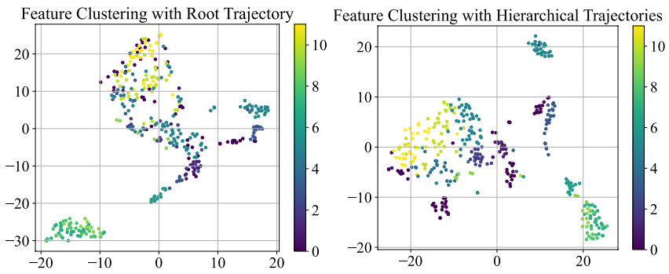
4.5 Qualitative Results
We present the visualization results of the proposed Hi-Motion in Fig. 5. The model is trained on the HumanML3D dataset and generates motions based on the text description. Utilizing the SPML model [25], we render the generated motion skeleton sequence to obtain the visualization result. It can be seen that the Hi-Motion can accurately obtain the semantic information of the text and map it to generate the corresponding human motion.

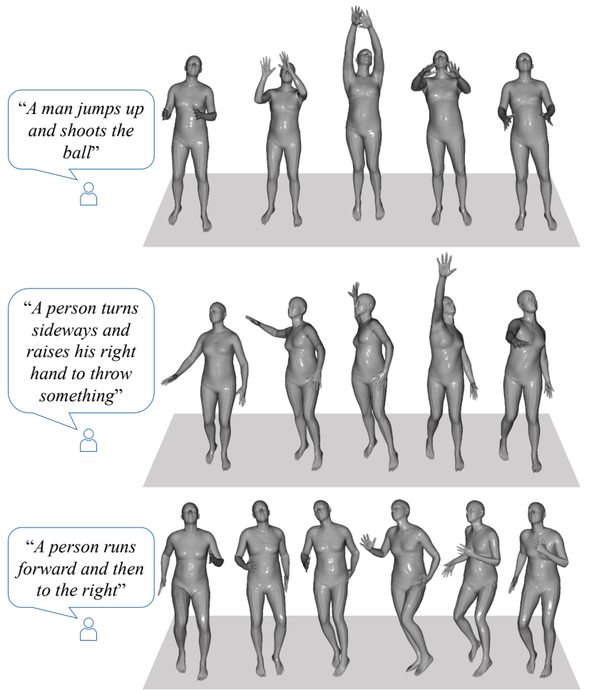
4.6 Analysis of the Skeleton Generator
To analyze the proposed intention guided Skeleton Synthesis Mechanism (SSM), which models the skeleton generation of each frame as a graph node transformation problem under the determined edge connection, we conduct comparative experiments with the commonly used motion decoder. Specifically, we replaced the skeleton generator of the proposed Hi-Motion with a standard VQ-VAE motion decoder [42, 53] and performed training and testing. The experimental results are presented in Table 3, where the "VAE Decoder" represents the replaced motion generator. The results in the table show that the proposed SSM has a significant improvement in both R-Precision and FID metrics. Especially in the FID metric, the advantage is more than 0.5. This demonstrates the effectiveness of our approach to model skeleton generation as a graph node feature transformation problem, where leveraging prior knowledge of predefined edge connectivity reduces the solution space of the skeleton generation task and enhances model performance.

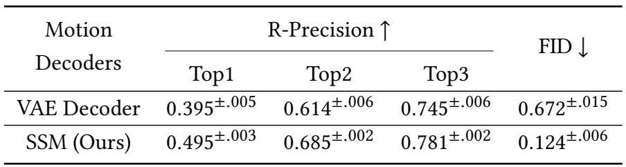
Recognized table text (check against the image)
| Motion | R-Precision ↑ | FID ↓ | ||
|---|---|---|---|---|
| Decoders | Top1 | Top2 | Top3 | |
| VAE Decoder | 0.395 ±.005 | 0.614 ±.006 | 0.745 ±.006 | 0.672 ±.015 |
| SSM (Ours) | 0.495 ±.003 | 0.685 ±.002 | 0.781 ±.002 | 0.124 ±.006 |
4.7 Ablation Study
To evaluate the effectiveness of the proposed modules, we conduct ablation experiments, and the results are presented in Table 4. Firstly, we evaluate the effectiveness of the proposed mechanism for parametric modeling of pivot joints trajectory based on high-order Bezier curves and the hierarchical representation mechanism (Hier) for motion generation. "w/o BDM" means to replace the Bézier Decoder Module (BDM) with a direct trajectory regression approach. It is evident that the modeling mechanism based on Bézier curves significantly improves the generation outcomes compared to direct trajectory prediction. This is because although the motion trajectories of joints appear to be freeform curves, they are essentially curves controlled by the collaborative action of neighboring joints. This is analogous to how Bézier curves are constrained by their control points. Therefore, the mechanism we propose for generating trajectories based on the prediction of Bézier control points can effectively avoid issues such as strange or unrealistic trajectories. "w/o Hier" signifies the use of a single root joint trajectory in place of the pivot joints based on hierarchical representation. Since the single joint has a weak representation of the action, the accuracy of the generated results is significantly lower than that of Hi-Motion.
Subsequently, to analyze the effect of hierarchical motion intention guidance on skeleton generation, we remove the intention integration part from the SSM, denoted as "w/o Intention". The experimental results indicate that the hierarchical motion intention guidance mechanism significantly enhances the generation performance, as it provides global trajectory information that helps the model better capture long-range dependencies, making the generated motion sequences more coherent and natural in both time and space. This effectively mitigates the error propagation issues faced by autoregressive generation mechanisms.

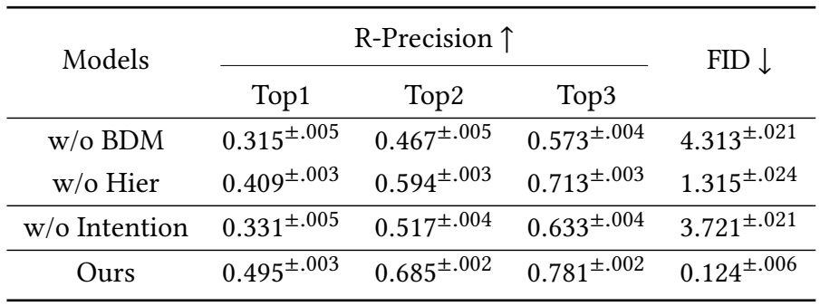
Recognized table text (check against the image)
| Models | R-Precision ↑ | FID ↓ | ||
|---|---|---|---|---|
| Top1 | Top2 | Top3 | ||
| w/o BDM | 0.315 ±.005 | 0.467 ±.005 | 0.573 ±.004 | 4.313 ±.021 |
| w/o Hier | 0.409 ±.003 | 0.594 ±.003 | 0.713 ±.003 | 1.315 ±.024 |
| w/o Intention | 0.331 ±.005 | 0.517 ±.004 | 0.633 ±.004 | 3.721 ±.021 |
| Ours | 0.495 ±.003 | 0.685 ±.002 | 0.781 ±.002 | 0.124 ±.006 |
5 Discussion
In this study, we identify a critical issue in motion generation: the highly nonlinear and vast solution space when learning a mapping from feature space to motion sequences directly. Additionally, the accumulation of errors in existing autoregressive-based models [13, 51] during motion generation significantly impacts the authenticity of the generated motions. To address this issue, we attempt to solve the above problems from a novel perspective of motion hierarchy, namely, the motion of each body part is divided into the intention guidance of pivot joints and the action execution of terminal joints. By generating only the trajectories of pivot joints from the latent feature space, the complexity of the mapping is effectively reduced. Additionally, we introduce hierarchical intent guidance to mitigate the accumulation of errors in skeleton generation. Unlike existing trajectory prediction-based models [23, 26], we propose that joint movement is constrained by the coordinated control of neighboring joints. This process can be precisely modeled using higher-order Bézier curves, thereby avoiding the uncertainties introduced by direct regression. Our mechanism of skeleton generation also differs from previous work [11, 48, 51, 53], since we model the generation of the skeleton as a graph transformation problem under determined adjacency relationships, maximizing the use of prior information on the topology of the human skeleton. Our hierarchical motion representation perspective has potential applications in robotics, action prediction, and related fields.
6 Conclusion
In this paper, we address the challenges of generating natural human motion sequences directly from latent feature spaces, which often result in unnatural movements due to the vast solution space and the accumulation of errors associated with existing autoregressive methods. We introduce a novel text-to-motion generation model named Hi-Motion, which is guided by hierarchical motion intentions. Initially, we employ high-order Bézier curves to parameterize pivot joint motion trajectories of each body part, simulating the constraints of adjacent joint points to prevent anomalies in motion synthesis. Subsequently, we model the generation of the skeleton of each frame as a skeleton graph transformation problem under determined edge connections. The trajectories of pivot joints are encoded into the graph node features of the skeleton as motion intention to guide the synthesis of skeletons. Extensive experiments conducted on text-motion datasets such as HumanML3D and KITML demonstrate the effectiveness of the proposed Hi-Motion.
7 Acknowledgments
This work is partially supported by the Leading Goose R&D Program of Zhejiang Province (2025C02045), the National Natural Science Foundation of China (T2293723), the Zhejiang Provincial Natural Science Foundation (LZ24F020003), the Excellent Research Innovation Team of Anhui Provincial Education Department (2024AH010018), and the ZJU Kunpeng & Ascend Center of Excellence.
References
[1] Josh Achiam, Steven Adler, Sandhini Agarwal, Lama Ahmad, Ilge Akkaya, Florencia Leoni Aleman, Diogo Almeida, Janko Altenschmidt, Sam Altman, Shyamal Anadkat, et al. 2023. Gpt-4 technical report. arXiv preprint arXiv:2303.08774 (2023).
[2] Uttaran Bhattacharya, Nicholas Rewkowski, Abhishek Banerjee, Pooja Guhan, Aniket Bera, and Dinesh Manocha. 2021. Text2gestures: A transformer-based network for generating emotive body gestures for virtual agents. In 2021 IEEE virtual reality and 3D user interfaces (VR). IEEE, 1-10.
[3] Sarah-Jayne Blakemore and Jean Decety. 2001. From the perception of action to the understanding of intention. Nature reviews neuroscience 2, 8 (2001), 561-567.
[4] Zhe Cao, Tomas Simon, Shih-EnWei, and Yaser Sheikh. 2017. Realtime multiperson 2d pose estimation using part affinity fields. In Proceedings of the IEEE conference on computer vision and pattern recognition. 7291-7299.
[5] Junjun Chen, YijunWang, Yixuan Sun, Yifei Yu, Zi'ao Liu, Zhefeng Gong, and Nenggan Zheng. 2023. Path guided motion synthesis for Drosophila larvae. Frontiers of Information Technology & Electronic Engineering 24, 10 (2023), 14821496.
[6] Xiaodong Chen, Kunlang He, Wu Liu, Xinchen Liu, Zheng-Jun Zha, and Tao Mei. 2024. CLaM: An open-source library for performance evaluation of textdriven human motion generation. In Proceedings of the 32nd ACM International Conference on Multimedia. 11194-11197.
[7] Xin Chen, Biao Jiang, Wen Liu, Zilong Huang, Bin Fu, Tao Chen, and Gang Yu. 2023. Executing your commands via motion diffusion in latent space. In Proceedings of the IEEE/CVF Conference on Computer Vision and Pattern Recognition. 18000-18010.
[8] Kyunghyun Cho, Bart Van Merriënboer, Caglar Gulcehre, Dzmitry Bahdanau, Fethi Bougares, Holger Schwenk, and Yoshua Bengio. 2014. Learning phrase representations using RNN encoder-decoder for statistical machine translation. arXiv preprint arXiv:1406.1078 (2014).
[9] Wenxun Dai, Ling-Hao Chen, Jingbo Wang, Jinpeng Liu, Bo Dai, and Yansong Tang. 2024. Motionlcm: Real-time controllable motion generation via latent consistency model. In European Conference on Computer Vision. Springer, 390408.
[10] Kun Dong, Jian Xue, Zehai Niu, Xing Lan, Ke Lu, Qingyuan Liu, and Xiaoyu Qin. 2024. Realistic Full-Body Motion Generation from Sparse Tracking with State Space Model. In Proceedings of the 32nd ACM International Conference on Multimedia. 4024-4033.
[11] Anindita Ghosh, Noshaba Cheema, Cennet Oguz, Christian Theobalt, and Philipp Slusallek. 2021. Synthesis of compositional animations from textual descriptions. In Proceedings of the IEEE/CVF international conference on computer vision. 13961406.
[12] Ian Goodfellow, Jean Pouget-Abadie, Mehdi Mirza, Bing Xu, DavidWarde-Farley, Sherjil Ozair, Aaron Courville, and Yoshua Bengio. 2020. Generative adversarial networks. Commun. ACM 63, 11 (2020), 139-144.
[13] Chuan Guo, Shihao Zou, Xinxin Zuo, Sen Wang, Wei Ji, Xingyu Li, and Li Cheng. 2022. Generating diverse and natural 3d human motions from text. In Proceedings of the IEEE/CVF Conference on Computer Vision and Pattern Recognition. 51525161.
[14] Chuan Guo, Xinxin Zuo, Sen Wang, and Li Cheng. 2022. Tm2t: Stochastic and tokenized modeling for the reciprocal generation of 3d human motions and texts. In European Conference on Computer Vision. Springer, 580-597.
[15] Chuan Guo, Xinxin Zuo, Sen Wang, Shihao Zou, Qingyao Sun, Annan Deng, Minglun Gong, and Li Cheng. 2020. Action2motion: Conditioned generation of 3d human motions. In Proceedings of the 28th ACM International Conference on Multimedia. 2021-2029.
[16] Le Han, Kaixuan Chen, Lei Zhao, Yangbo Jiang, Pengfei Wang, and Nenggan Zheng. 2025. Cross-Domain Animal Pose Estimation with Skeleton AnomalyAware Learning. IEEE Transactions on Circuits and Systems for Video Technology (2025). doi:10.1109/TCSVT.2025.3557844
[17] Evan G Hemingway and Oliver M O'Reilly. 2018. Perspectives on Euler angle singularities, gimbal lock, and the orthogonality of applied forces and applied moments. Multibody system dynamics 44 (2018), 31-56.
[18] Martin Heusel, Hubert Ramsauer, Thomas Unterthiner, Bernhard Nessler, and Sepp Hochreiter. 2017. Gans trained by a two time-scale update rule converge to a local nash equilibrium. Advances in neural information processing systems 30
(2017).
[19] JonathanHo, Ajay Jain, and Pieter Abbeel. 2020. Denoising diffusion probabilistic models. Advances in neural information processing systems 33 (2020), 6840-6851.
[20] SeppHochreiter and Jürgen Schmidhuber. 1997. Long short-termmemory. Neural computation 9, 8 (1997), 1735-1780.
[21] Myoung-Jun Kim, Myung-Soo Kim, and Sung Yong Shin. 1995. A general construction scheme for unit quaternion curves with simple high order derivatives. In Proceedings of the 22nd annual conference on Computer graphics and interactive techniques. 369-376.
[22] Diederik P Kingma. 2013. Auto-encoding variational bayes. arXiv preprint arXiv:1312.6114 (2013).
[23] Hsin-Ying Lee, Xiaodong Yang, Ming-Yu Liu, Ting-Chun Wang, Yu-Ding Lu, Ming-Hsuan Yang, and Jan Kautz. 2019. Dancing to music. Advances in neural information processing systems 32 (2019).
[24] Angela S Lin, Lemeng Wu, Rodolfo Corona, Kevin Tai, Qixing Huang, and Raymond J Mooney. 2018. Generating animated videos of human activities from natural language descriptions. Learning 1, 2018 (2018), 1.
[25] Matthew Loper, Naureen Mahmood, Javier Romero, Gerard Pons-Moll, and Michael J Black. 2023. SMPL: A skinned multi-person linear model. In Seminal Graphics Papers: Pushing the Boundaries, Volume 2. 851-866.
[26] Qiujing Lu, Yipeng Zhang, Mingjian Lu, and Vwani Roychowdhury. 2022. Actionconditioned on-demand motion generation. In Proceedings of the 30th ACM International Conference on Multimedia. 2249-2257.
[27] Naureen Mahmood, Nima Ghorbani, Nikolaus F Troje, Gerard Pons-Moll, and Michael J Black. 2019. AMASS: Archive of motion capture as surface shapes. In Proceedings of the IEEE/CVF international conference on computer vision. 54425451.
[28] Wei Mao, Miaomiao Liu, Mathieu Salzmann, and Hongdong Li. 2019. Learning trajectory dependencies for human motion prediction. In Proceedings of the IEEE/CVF international conference on computer vision. 9489-9497.
[29] Zichong Meng, Yiming Xie, Xiaogang Peng, Zeyu Han, and Huaizu Jiang. 2025. Rethinking Diffusion for Text-Driven Human Motion Generation: Redundant Representations, Evaluation, and Masked Autoregression. In Proceedings of the Computer Vision and Pattern Recognition Conference (CVPR). 27859-27871.
[30] Pratibha Mishra and Shweta Ezra. 2011. Human gait recognition using bezier curves. International Journal on Computer Science and Engineering 3, 2 (2011), 969-975.
[31] Nishant Nikhil and Brendan Tran Morris. 2018. Convolutional neural network for trajectory prediction. In Proceedings of the European conference on computer vision (ECCV) workshops. 0-0.
[32] Fatemeh Noroozi, Ciprian Adrian Corneanu, Dorota Kamińska, Tomasz Sapiński, Sergio Escalera, and Gholamreza Anbarjafari. 2018. Survey on emotional body gesture recognition. IEEE transactions on affective computing 12, 2 (2018), 505523.
[33] Georgios Pavlakos, Vasileios Choutas, Nima Ghorbani, Timo Bolkart, Ahmed AA Osman, Dimitrios Tzionas, and Michael J Black. 2019. Expressive body capture: 3d hands, face, and body from a single image. In Proceedings of the IEEE/CVF conference on computer vision and pattern recognition. 10975-10985.
[34] Mathis Petrovich, Michael J Black, and Gül Varol. 2021. Action-conditioned 3d human motion synthesis with transformer vae. In Proceedings of the IEEE/CVF International Conference on Computer Vision. 10985-10995.
[35] Mathis Petrovich, Michael J Black, and Gül Varol. 2022. TEMOS: Generating diverse human motions from textual descriptions. In European Conference on Computer Vision. Springer, 480-497.
[36] Matthias Plappert, Christian Mandery, and Tamim Asfour. 2016. The kit motionlanguage dataset. Big data 4, 4 (2016), 236-252.
[37] Qiaosong Qi, Le Zhuo, Aixi Zhang, Yue Liao, Fei Fang, Si Liu, and Shuicheng Yan. 2023. Diffdance: Cascaded human motion diffusion model for dance generation. In Proceedings of the 31st ACM International Conference on Multimedia. 1374-1382.
[38] Alec Radford, Jong Wook Kim, Chris Hallacy, Aditya Ramesh, Gabriel Goh, Sandhini Agarwal, Girish Sastry, Amanda Askell, Pamela Mishkin, Jack Clark, et al. 2021. Learning transferable visual models from natural language supervision. In International conference on machine learning. PMLR, 8748-8763.
[39] Alec Radford, JeffreyWu, Rewon Child, David Luan, Dario Amodei, Ilya Sutskever, et al. 2019. Language models are unsupervised multitask learners. OpenAI blog 1, 8 (2019), 9.
[40] AndreyRudenko, Luigi Palmieri,Michael Herman, KrisMKitani, DariuMGavrila, and Kai O Arras. 2020. Human motion trajectory prediction: A survey. The International Journal of Robotics Research 39, 8 (2020), 895-935.
[41] Dian Shao, Yue Zhao, Bo Dai, and Dahua Lin. 2020. Finegym: A hierarchical video dataset for fine-grained action understanding. In Proceedings of the IEEE/CVF conference on computer vision and pattern recognition. 2616-2625.
[42] Li Siyao, Weijiang Yu, Tianpei Gu, Chunze Lin, Quan Wang, Chen Qian, Chen Change Loy, and Ziwei Liu. 2022. Bailando: 3d dance generation by actorcritic gpt with choreographic memory. In Proceedings of the IEEE/CVF Conference on Computer Vision and Pattern Recognition. 11050-11059.
[43] Ke Sun, Bin Xiao, Dong Liu, and Jingdong Wang. 2019. Deep high-resolution representation learning for human pose estimation. In Proceedings of the IEEE/CVF
conference on computer vision and pattern recognition. 5693-5703.
[44] Zehua Sun, Qiuhong Ke, Hossein Rahmani, Mohammed Bennamoun, GangWang, and Jun Liu. 2022. Human action recognition from various data modalities: A review. IEEE transactions on pattern analysis and machine intelligence 45, 3 (2022), 3200-3225.
[45] Guy Tevet, Sigal Raab, Brian Gordon, Yoni Shafir, Daniel Cohen-or, and Amit Haim Bermano. 2023. Human Motion Diffusion Model. In The Eleventh International Conference on Learning Representations. https://openreview.net/ forum?id=SJ1kSyO2jwu
[46] Sergey Tulyakov, Ming-Yu Liu, Xiaodong Yang, and Jan Kautz. 2018. Mocogan: Decomposing motion and content for video generation. In Proceedings of the IEEE conference on computer vision and pattern recognition. 1526-1535.
[47] Aaron Van Den Oord, Oriol Vinyals, et al. 2017. Neural discrete representation learning. Advances in neural information processing systems 30 (2017).
[48] Weilin Wan, Zhiyang Dou, Taku Komura, Wenping Wang, Dinesh Jayaraman, and Lingjie Liu. 2024. Tlcontrol: Trajectory and language control for human motion synthesis. In European Conference on Computer Vision. Springer, 37-54.
[49] Yin Wang, Zhiying Leng, Frederick WB Li, Shun-Cheng Wu, and Xiaohui Liang. 2023. Fg-t2m: Fine-grained text-driven human motion generation via diffusion model. In Proceedings of the IEEE/CVF International Conference on Computer Vision. 22035-22044.
[50] Sijie Yan, Yuanjun Xiong, and Dahua Lin. 2018. Spatial temporal graph convolutional networks for skeleton-based action recognition. In Proceedings of the AAAI conference on artificial intelligence, Vol. 32.
[51] Jianrong Zhang, Yangsong Zhang, Xiaodong Cun, Yong Zhang, Hongwei Zhao, Hongtao Lu, Xi Shen, and Ying Shan. 2023. Generating human motion from textual descriptions with discrete representations. In Proceedings of the IEEE/CVF conference on computer vision and pattern recognition. 14730-14740.
[52] Mingyuan Zhang, Zhongang Cai, Liang Pan, Fangzhou Hong, Xinying Guo, Lei Yang, and Ziwei Liu. 2024. Motiondiffuse: Text-driven human motion generation with diffusion model. IEEE Transactions on Pattern Analysis and Machine Intelligence (2024).
[53] Chongyang Zhong, Lei Hu, Zihao Zhang, and Shihong Xia. 2023. Attt2m: Textdriven human motion generation with multi-perspective attention mechanism. In Proceedings of the IEEE/CVF International Conference on Computer Vision. 509-519.
[54] Wenyang Zhou, Zhiyang Dou, Zeyu Cao, Zhouyingcheng Liao, Jingbo Wang, Wenjia Wang, Yuan Liu, Taku Komura, Wenping Wang, and Lingjie Liu. 2024. Emdm: Efficient motion diffusion model for fast and high-quality motion generation. In European Conference on Computer Vision. Springer, 18-38.
[55] Wentao Zhu, Xiaoxuan Ma, Dongwoo Ro, Hai Ci, Jinlu Zhang, Jiaxin Shi, Feng Gao, Qi Tian, and Yizhou Wang. 2023. Human motion generation: A survey. IEEE Transactions on Pattern Analysis and Machine Intelligence (2023).